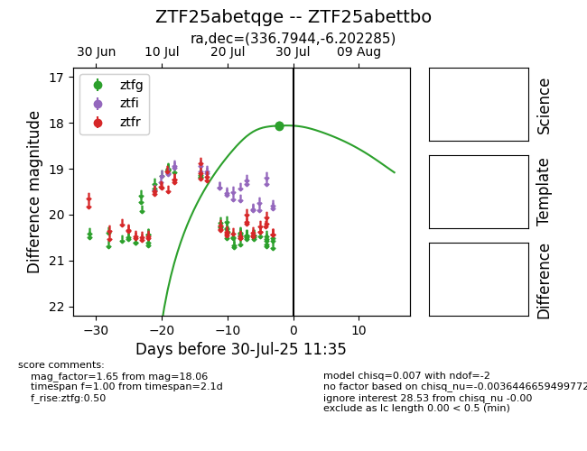

Target ZTF25abettbo at 2025-07-30 11:35, see:
FINK: fink-portal.org/ZTF25abettbo
Lasair: lasair-ztf.lsst.ac.uk/objects/ZTF25abettbo
ALeRCE: alerce.online/object/ZTF25abettbo
alt names
ZTF25abetqge (ztf,fink)
ZTF25abettbo (
coordinates:
equatorial (ra, dec) = (336.7944,-6.20229)
galactic (l, b) = (57.7203,-49.86019)
photometry
last ztfg=18.06
3 ztfg detections
